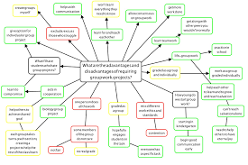

The Stibnite and Pebble reports will be posted on the website as examples of our first and primary product that is available for a fee.
Read our Stibnite Report Here

Develop the knowledge graph for EcoInfo, and the search platform based on the knowledge graph.

Develop models of the relationships between environmental, social and labor data and the mine.